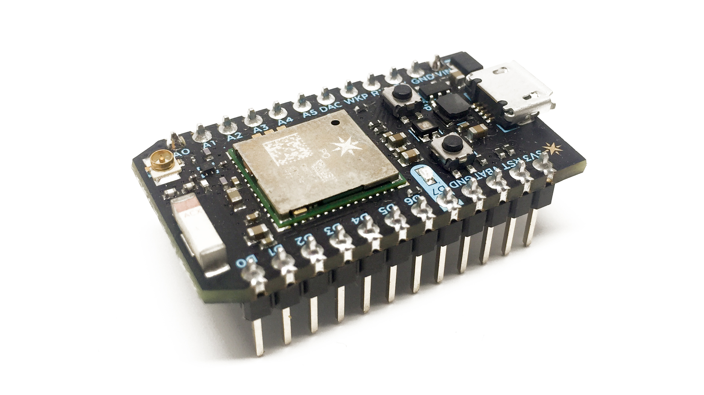
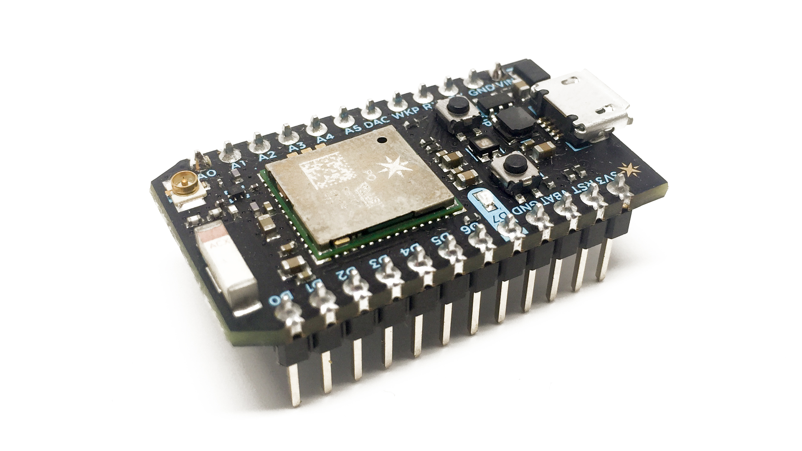
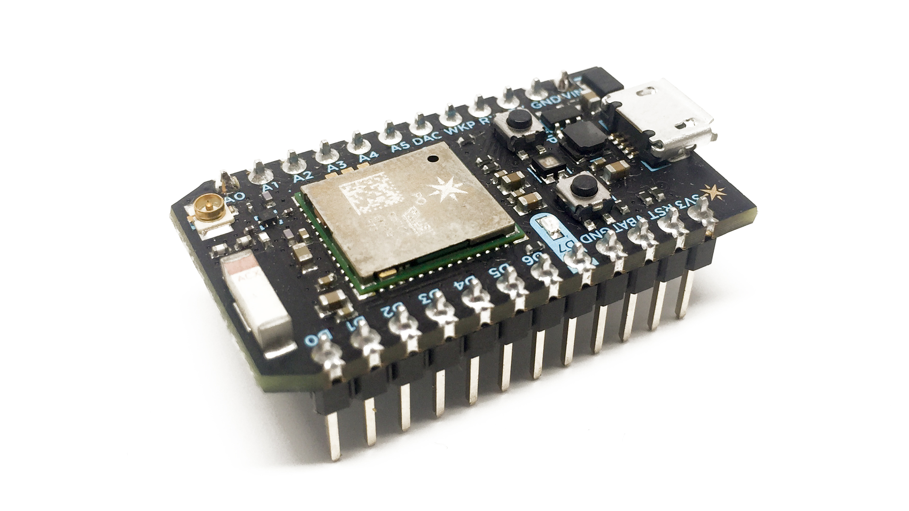

1.Processing with GPIO: One can use any of these board from this list and use it rapidly prototype their system

2.Combination of 'Processing with GPIO' & 'Without GPIO': Here we give the user an option to use any one processor and a GPIO module for the setup.

3.Combination of 'Processing with GPIO' , 'Without GPIO' and 'Only GPIO': Here the user can select any configuration from the list below to rapidly prototype his system